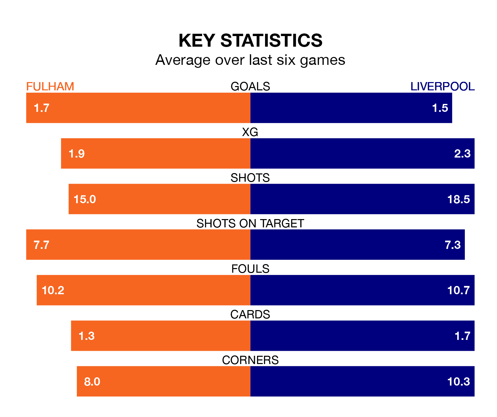

Liverpool travel to Craven Cottage for Sunday's match against Fulham looking to bounce back from defeat last time out in the Premier League.
The Reds, who sit third in the league after 32 games, fell to a 1-0 home defeat to Crystal Palace on April 14.
They face a Fulham side who picked up a win in their last match, a 2-0 victory against West Ham United, and who sit 12th in the table.
With 72 goals in 32 games so far this season, Liverpool are the league's third-highest scorers with 2.2 goals per game. And they are conceding fewer than average, letting in 31 goals at a rate of 1.0 per game.
Fulham, meanwhile, are below average scorers, with 1.5 goals per game, compared to a league average of 1.6. They have also conceded 1.5 goals per game.
With Bernd Leno between the sticks, the Cottagers can rely on one of the league's safest pair of hands. He has kept nine clean sheets in his 33 appearances this season, and only one other 'keeper – Arsenal's David Raya – has been able to prevent the opposition scoring on more occasions in the Premier League.
In the Reds' net, Alisson Becker has seven clean sheets in 22 games.
In the last 10 years, Fulham and Liverpool have played each other on nine occasions. Fulham won one of them, Liverpool five, and they drew three times.
On average, the Cottagers scored 1.1 goals and the Reds 1.7 in those matches.
Their last meeting was on January 24, when they played out a 1-1 draw.
The hosts are in mixed form in the Premier League, with two wins and a draw from their last six games.
With three wins and two draws over that period, the away side's form is better – they have taken 11 points from 18, compared to Fulham's seven.
Updated: 11:31 (UTC), 15/04/24